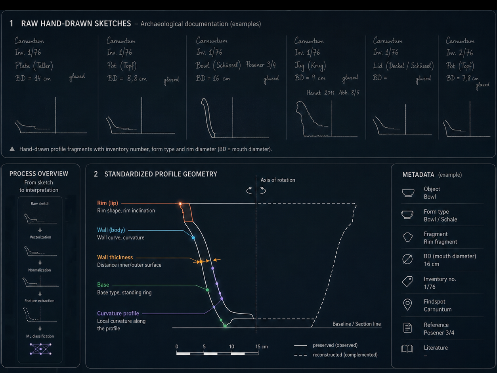
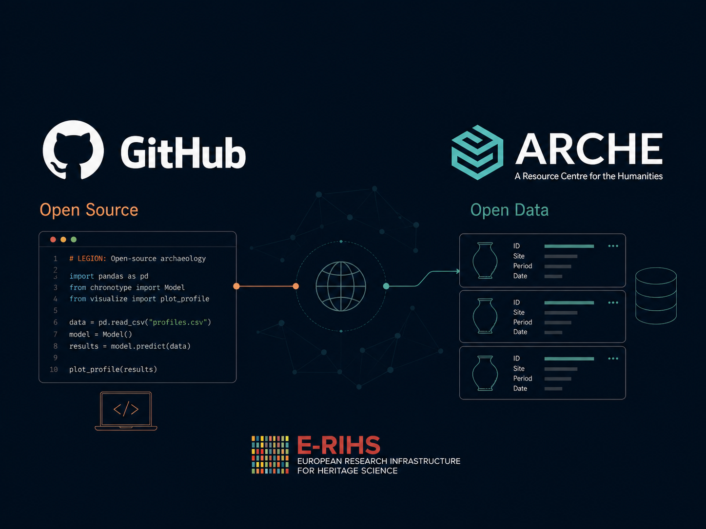
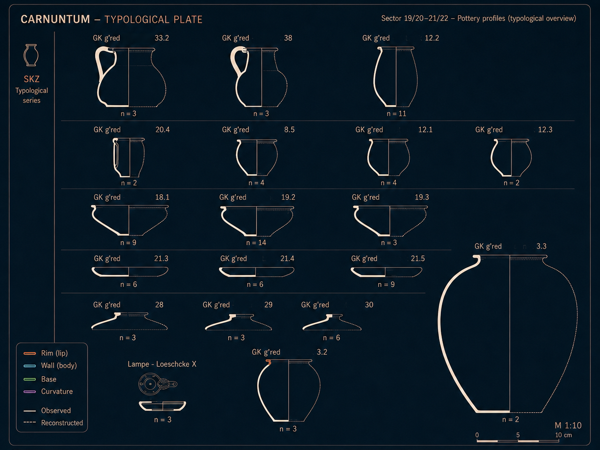
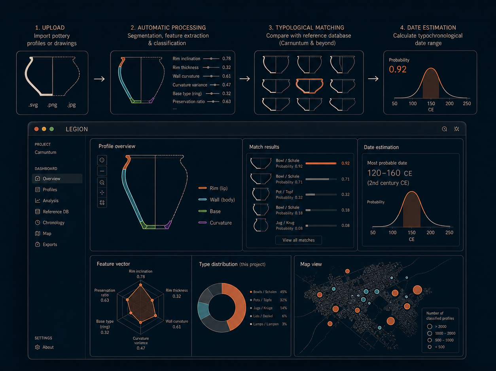
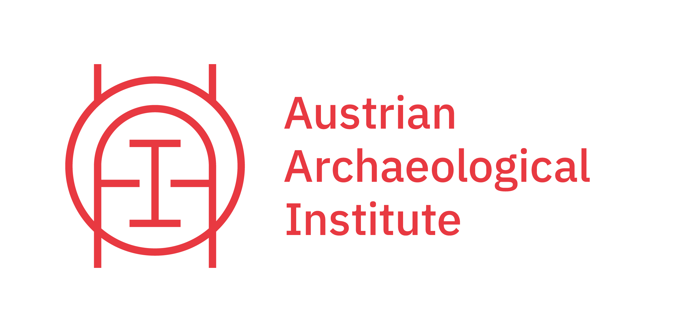
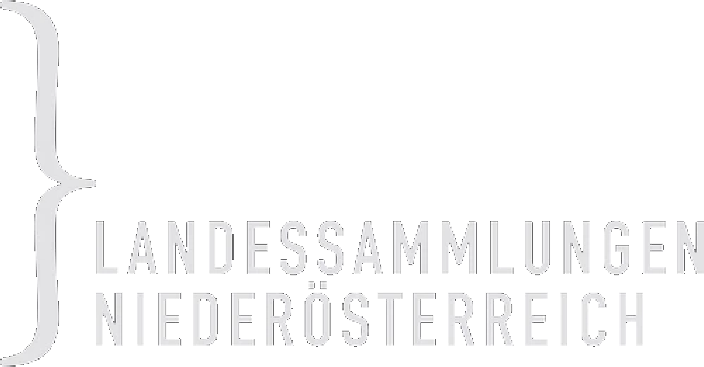
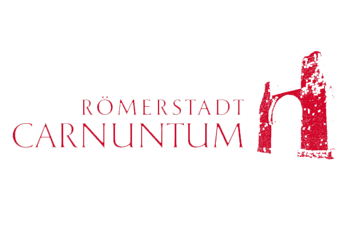

HERITAGE SCIENCE AUSTRIA 2.0
LEGION
machine LEarninG-enabled Identification of archaeological Objects in the middle daNube river basin.
Decoding the history of Roman Carnuntum through automated classification of common ware pottery using cutting-edge Machine Learning.
EXPLORE PROJECTFragmented Knowledge & Data Overload
The Manual Bottleneck
Traditional classification of everyday ceramics is too slow for massive, fragmented archaeological datasets. Huge amounts of data remain unassessed.
Untapped Data Points
Tens of thousands of technical 2D find drawings remain unclassified and unintegrated due to the sheer volume of material.
Some finds are more equal than other finds
Funding for mass finds is often restricted. Automated solutions are required to bridge this gap.
AI-Enabled Archaeology
LEGION introduces a Semi-supervised Computer Vision Pipeline leveraging thousands of historical documents for deep material insight.

Hybrid Data Input
Processing over 70,000 2D drawings alongside their comprehensive archaeological metadata.
Human-in-the-Loop (HITL)
eXplainable AI (XAI) ensures results are validated by experts to remain archaeologically robust.

Open Source Integration
Fully open-source solutions hosted on GitHub, ensuring long-term accessibility and transparency for the global research community.
New Socio-Economic Insights & AI Tools
Local Production & Trade
Revealing complex patterns in local production and tracking trade trends across the entire Middle Danube River Basin.

New Typochronology
Establishing a completely new, data-driven typochronology of Roman Common Ware based on large scale analysis.

Free & Open-Source Classification Tool
A user-friendly, open-source tool built for rapid, automated typochronological dating with >90% classification accuracy.
Experts Behind LEGION
The LEGION project is a multi-disciplinary collaboration bridging the gap between archaeological expertise and advanced computational methods.
We are always looking for collaboration and feedback. Reach out to the project lead for inquiries regarding data, methodology, or partnership opportunities.
Leading Institutions

OeAI / OeAW
Austrian Archaeological Institute

CVL / TU WIEN
Computer Vision Lab

ACDH
Austrian Centre for Digital Humanities

LSNÖ
Lower Austrian State Collections

CARNUNTUM
Roman City Carnuntum

WIEN MUSEUM
Vienna Museum
UWK
University for Continuing Education Krems